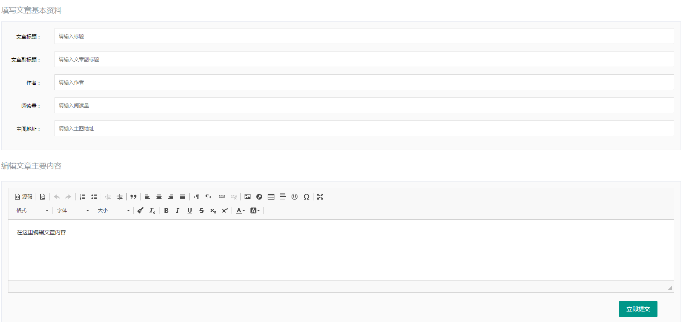

<!DOCTYPE html>


<html lang="zh-CN">


<head>
  <meta charset="utf-8" />
   
  <meta name="keywords" content="翟天野 天野 翟天野博客 tianye zhaitianye" />
   
  <meta name="description" content="The seeker of the world" />
  
  <meta name="viewport" content="width=device-width, initial-scale=1, maximum-scale=1" />
  <title>
    Ckeditor-富文本编辑器安装使用加实战 |  Tianye Blog
  </title>
  <meta name="generator" content="hexo-theme-ayer">
  
  <link rel="shortcut icon" href="/favicon.ico" />
  
  
<link rel="stylesheet" href="/dist/main.css">

  
<link rel="stylesheet" href="/comm/remixicon.min.css">

  
<link rel="stylesheet" href="/css/custom.css">

  
  
<script src="/comm/pace.min.js"></script>

  
  

  
<script>
var _hmt = _hmt || [];
(function() {
	var hm = document.createElement("script");
	hm.src = "https://hm.baidu.com/hm.js?a65f4359920e6c4b5b2b6d0519751045";
	var s = document.getElementsByTagName("script")[0]; 
	s.parentNode.insertBefore(hm, s);
})();
</script>


</head>

</html>

<body>
  <div id="app">
    
      
      <canvas width="1777" height="841"
        style="position: fixed; left: 0px; top: 0px; z-index: 99999; pointer-events: none;"></canvas>
      
    <main class="content on">
      <section class="outer">
  <article
  id="post-Ckeditor-富文本编辑器安装使用加实战"
  class="article article-type-post"
  itemscope
  itemprop="blogPost"
  data-scroll-reveal
>
  <div class="article-inner">
    
    <header class="article-header">
       
<h1 class="article-title sea-center" style="border-left:0" itemprop="name">
  Ckeditor-富文本编辑器安装使用加实战
</h1>
 

    </header>
     
    <div class="article-meta">
      <a href="/2017/10/Ckeditor-%E5%AF%8C%E6%96%87%E6%9C%AC%E7%BC%96%E8%BE%91%E5%99%A8%E5%AE%89%E8%A3%85%E4%BD%BF%E7%94%A8%E5%8A%A0%E5%AE%9E%E6%88%98/" class="article-date">
  <time datetime="2017-10-22T02:56:44.000Z" itemprop="datePublished">2017-10-22</time>
</a> 
  <div class="article-category">
    <a class="article-category-link" href="/categories/JS%E5%B7%A5%E5%85%B7/">JS工具</a>
  </div>
  
<div class="word_count">
    <span class="post-time">
        <span class="post-meta-item-icon">
            <i class="ri-quill-pen-line"></i>
            <span class="post-meta-item-text"> 字数统计:</span>
            <span class="post-count">2k</span>
        </span>
    </span>

    <span class="post-time">
        &nbsp; | &nbsp;
        <span class="post-meta-item-icon">
            <i class="ri-book-open-line"></i>
            <span class="post-meta-item-text"> 阅读时长≈</span>
            <span class="post-count">9 分钟</span>
        </span>
    </span>
</div>
 
    </div>
      
    <div class="tocbot"></div>


  
    <div class="article-entry" itemprop="articleBody">
       
  <h2 id="移步官网（https-ckeditor-com-）"><a href="#移步官网（https-ckeditor-com-）" class="headerlink" title=" 移步官网（https://ckeditor.com/）"></a> 移步官网（<a href="https://ckeditor.com/" target="_blank" rel="noopener">https://ckeditor.com/</a>）</h2><h3 id="安装"><a href="#安装" class="headerlink" title="安装"></a><strong>安装</strong></h3><p>安装CKEditor是一件容易的工作，只需要按照下面的简单步骤就可以完成。</p>
<p>1.从CKEditor官方网站上下载CKEditor的最新版本。</p>
<p>2.将下载的文件解压到你网站目录下的“ckeditor”文件夹里。</p>
<p>注意：你也可以将这些文件放在你网站的任何一个地方，默认为“ckeditor”。测试你的安装 编辑器附带有一些用来验证安装结果是否能正常运行的简单的例子网页，请查看<code>“_samples”</code>目录。访问如下的地址进行测试：</p>
<figure class="highlight plain"><table><tr><td class="gutter"><pre><span class="line">1</span><br><span class="line">2</span><br><span class="line">3</span><br></pre></td><td class="code"><pre><span class="line">http:&#x2F;&#x2F;&lt;你的网站域名&gt;&#x2F;&lt;CKEditor 安装路径&gt;&#x2F;_samples&#x2F;index.html</span><br><span class="line"></span><br><span class="line">例如：http:&#x2F;&#x2F;www.您的网站.com&#x2F;ckeditor&#x2F;_samples&#x2F;index.html</span><br></pre></td></tr></table></figure>
<h2 id="集成"><a href="#集成" class="headerlink" title="集成"></a>集成</h2><p>有若干个方式能将CKEditor集成到你的网页中，在这里介绍最常用的实现方法。</p>
<h3 id="第一步：载入CKEditor"><a href="#第一步：载入CKEditor" class="headerlink" title="第一步：载入CKEditor"></a>第一步：载入CKEditor</h3><p>CKEditor 是一个JavaScript 应用程序，你只需要在你的网页中包含一个文件引用就能加载它。</p>
<p>如果你已经将CKEditor安装在了你网站的“ckeditor”目录，你可参照如下示例：</p>
<figure class="highlight plain"><table><tr><td class="gutter"><pre><span class="line">1</span><br><span class="line">2</span><br><span class="line">3</span><br><span class="line">4</span><br></pre></td><td class="code"><pre><span class="line">&lt;head&gt;</span><br><span class="line">...</span><br><span class="line">&lt;script type&#x3D;&quot;text&#x2F;javascript&quot; src&#x3D;&quot;&#x2F;ckeditor&#x2F;ckeditor.js&quot;&gt;&lt;&#x2F;script&gt;</span><br><span class="line">&lt;&#x2F;head&gt;</span><br></pre></td></tr></table></figure>
<p>用以上方式加载，CKEditor JavaScript API 就准备就绪，可以使用了。</p>
<h3 id="第二步：创建一个编辑器实例"><a href="#第二步：创建一个编辑器实例" class="headerlink" title="第二步：创建一个编辑器实例"></a>第二步：创建一个编辑器实例</h3><p>CKEditor就像一个在你网页中的文本区域（textarea）一样工作，它提供了一个简单易写的用户界面、版式和丰富的文字输入区域。但用文本区域要实现同样的效果，并不容易，它需要用户输入html代码。</p>
<p>但是，实际上，CKEditor仍然是使用一个文本区域来传递它的数据到服务器上，这个文本区域对使用者来说是不可见的。所以，你必需创建并编辑一个实例,首先创建一个实例：</p>
<figure class="highlight plain"><table><tr><td class="gutter"><pre><span class="line">1</span><br></pre></td><td class="code"><pre><span class="line">&lt;textarea name&#x3D;&quot;editor1&quot;&gt;&lt;p&gt;Initial value.&lt;&#x2F;p&gt;&lt;&#x2F;textarea&gt;</span><br></pre></td></tr></table></figure>
<p>注意，如果你想要加载一些数据到编辑器中，例如从数据库中读出数据，只需要把数据放在文本区域（textarea）内就可以了，就像上面的例子一样。在这个例子中，我们已经将文本区域（textarea）命名这“editor1”。当接收POST提交的数据时，这个名字将被用在服务器操作。现在，开始使用CKEditor Javascript API,我们用一个编辑器实例来“替换（replace）”这个普通的文本区域（textarea），为此，必须加入如下一段JavaScript代码：</p>
<figure class="highlight plain"><table><tr><td class="gutter"><pre><span class="line">1</span><br><span class="line">2</span><br><span class="line">3</span><br></pre></td><td class="code"><pre><span class="line">&lt;script type&#x3D;&quot;text&#x2F;javascript&quot;&gt;</span><br><span class="line">CKEDITOR.replace( &#39;editor1&#39; );</span><br><span class="line">&lt;&#x2F;script&gt;</span><br></pre></td></tr></table></figure>
<p>上面的脚本块只能包含在网页的<code>&lt;textarea&gt;</code>标签之后。也可以在<code>&lt;head&gt;</code>标签内运行这个替换过程，但是在这种情况下，你必须确定已经载入完毕，通常可以写在window.onload事件里面（这时DOM肯定已经载入完毕啦）：</p>
<figure class="highlight plain"><table><tr><td class="gutter"><pre><span class="line">1</span><br><span class="line">2</span><br><span class="line">3</span><br><span class="line">4</span><br><span class="line">5</span><br><span class="line">6</span><br></pre></td><td class="code"><pre><span class="line">&lt;script type&#x3D;&quot;text&#x2F;javascript&quot;&gt;</span><br><span class="line">window.onload &#x3D; function()</span><br><span class="line">&#123;</span><br><span class="line">CKEDITOR.replace( &#39;editor1&#39; );</span><br><span class="line">&#125;;</span><br><span class="line">&lt;&#x2F;script&gt;</span><br></pre></td></tr></table></figure>
<p>第三步：保存编辑器内容数据</p>
<p>按照先前的描述，编辑器正如一个文本区域（textarea）一样工作，所以，当提交一个包含一个编辑器实例的表单时，他的数据也将是很简单的传递，用文本区域（textarea）的名称作为健名来接收数据。举个例子，按照上面的例子，在PHP中我们需要像这样来处理数据：</p>
<figure class="highlight plain"><table><tr><td class="gutter"><pre><span class="line">1</span><br><span class="line">2</span><br><span class="line">3</span><br></pre></td><td class="code"><pre><span class="line">&lt;?php</span><br><span class="line">$editor\_data &#x3D; $\_POST\[ &#39;editor1&#39; \];</span><br><span class="line">?&gt;</span><br></pre></td></tr></table></figure>
<p>客户端数据处理 一些用应中（如ajax应用）需要在客户端处理完所有的数据，然后用它自己的方式向服务器发送数据，在这些情况下，使用CKEditor API就足以轻松获取编辑器实例中的内容。例 如：</p>
<figure class="highlight plain"><table><tr><td class="gutter"><pre><span class="line">1</span><br><span class="line">2</span><br><span class="line">3</span><br></pre></td><td class="code"><pre><span class="line">&lt;script type&#x3D;&quot;text&#x2F;javascript&quot;&gt;</span><br><span class="line">var editor_data &#x3D; CKEDITOR.instances.editor1.getData();</span><br><span class="line">&lt;&#x2F;script&gt;</span><br></pre></td></tr></table></figure>
<h3 id="完整小例子"><a href="#完整小例子" class="headerlink" title="完整小例子"></a><strong>完整小例子</strong></h3><figure class="highlight plain"><table><tr><td class="gutter"><pre><span class="line">1</span><br><span class="line">2</span><br><span class="line">3</span><br><span class="line">4</span><br><span class="line">5</span><br><span class="line">6</span><br><span class="line">7</span><br><span class="line">8</span><br><span class="line">9</span><br><span class="line">10</span><br><span class="line">11</span><br><span class="line">12</span><br><span class="line">13</span><br><span class="line">14</span><br><span class="line">15</span><br><span class="line">16</span><br><span class="line">17</span><br><span class="line">18</span><br></pre></td><td class="code"><pre><span class="line">&lt;html&gt;</span><br><span class="line">&lt;head&gt;</span><br><span class="line">&lt;title&gt;Sample - CKEditor&lt;&#x2F;title&gt;</span><br><span class="line">&lt;script type&#x3D;&quot;text&#x2F;javascript&quot; src&#x3D;&quot;&#x2F;ckeditor&#x2F;ckeditor.js&quot;&gt;&lt;&#x2F;script&gt;</span><br><span class="line">&lt;&#x2F;head&gt;</span><br><span class="line">&lt;body&gt;</span><br><span class="line">&lt;form method&#x3D;&quot;post&quot;&gt;</span><br><span class="line">&lt;p&gt;</span><br><span class="line">My Editor:&lt;br &#x2F;&gt;</span><br><span class="line">&lt;textarea name&#x3D;&quot;editor1&quot;&gt;&lt;p&gt;Initial value.&lt;&#x2F;p&gt;&lt;&#x2F;textarea&gt;</span><br><span class="line">&lt;script type&#x3D;&quot;text&#x2F;javascript&quot;&gt;</span><br><span class="line">CKEDITOR.replace( &#39;editor1&#39; );</span><br><span class="line">&lt;&#x2F;script&gt;</span><br><span class="line">&lt;&#x2F;p&gt;</span><br><span class="line">&lt;p&gt;&lt;input type&#x3D;&quot;submit&quot; &#x2F;&gt;&lt;&#x2F;p&gt;</span><br><span class="line">&lt;&#x2F;form&gt;</span><br><span class="line">&lt;&#x2F;body&gt;</span><br><span class="line">&lt;&#x2F;html&gt;</span><br></pre></td></tr></table></figure>
<h3 id="实战例子"><a href="#实战例子" class="headerlink" title="实战例子"></a>实战例子</h3><h4 id="HTML"><a href="#HTML" class="headerlink" title="HTML"></a>HTML</h4><figure class="highlight plain"><table><tr><td class="gutter"><pre><span class="line">1</span><br><span class="line">2</span><br><span class="line">3</span><br><span class="line">4</span><br><span class="line">5</span><br><span class="line">6</span><br><span class="line">7</span><br><span class="line">8</span><br><span class="line">9</span><br><span class="line">10</span><br><span class="line">11</span><br><span class="line">12</span><br><span class="line">13</span><br><span class="line">14</span><br><span class="line">15</span><br><span class="line">16</span><br><span class="line">17</span><br><span class="line">18</span><br><span class="line">19</span><br><span class="line">20</span><br><span class="line">21</span><br><span class="line">22</span><br><span class="line">23</span><br><span class="line">24</span><br><span class="line">25</span><br><span class="line">26</span><br><span class="line">27</span><br><span class="line">28</span><br><span class="line">29</span><br><span class="line">30</span><br><span class="line">31</span><br><span class="line">32</span><br><span class="line">33</span><br><span class="line">34</span><br><span class="line">35</span><br><span class="line">36</span><br><span class="line">37</span><br><span class="line">38</span><br><span class="line">39</span><br><span class="line">40</span><br><span class="line">41</span><br><span class="line">42</span><br><span class="line">43</span><br><span class="line">44</span><br><span class="line">45</span><br></pre></td><td class="code"><pre><span class="line">&lt;form class&#x3D;&quot;layui-form&quot; action&#x3D;&quot;&quot;&gt;</span><br><span class="line"> &lt;div class&#x3D;&quot;clear pd-15 bg-fafafa bor bor-col-e8ebf2&quot;&gt;</span><br><span class="line"> &lt;div class&#x3D;&quot;layui-form-item&quot;&gt;</span><br><span class="line"> &lt;label class&#x3D;&quot;layui-form-label pt-10 pb-10 pl-0 pr-0 col-black&quot;&gt;文章标题：&lt;&#x2F;label&gt;</span><br><span class="line"> &lt;div class&#x3D;&quot;layui-input-block&quot;&gt;</span><br><span class="line"> &lt;input type&#x3D;&quot;text&quot; name&#x3D;&quot;main_title&quot; lay-verify&#x3D;&quot;required&quot; autocomplete&#x3D;&quot;off&quot; placeholder&#x3D;&quot;请输入标题&quot; class&#x3D;&quot;layui-input&quot;&gt;</span><br><span class="line"> &lt;&#x2F;div&gt;</span><br><span class="line"> &lt;&#x2F;div&gt;</span><br><span class="line"> &lt;div class&#x3D;&quot;layui-form-item&quot;&gt;</span><br><span class="line"> &lt;label class&#x3D;&quot;layui-form-label pt-10 pb-10 pl-0 pr-0 col-black&quot;&gt;文章副标题：&lt;&#x2F;label&gt;</span><br><span class="line"> &lt;div class&#x3D;&quot;layui-input-block&quot;&gt;</span><br><span class="line"> &lt;input type&#x3D;&quot;text&quot; name&#x3D;&quot;subheading&quot; lay-verify&#x3D;&quot;required&quot; placeholder&#x3D;&quot;请输入文章副标题&quot; autocomplete&#x3D;&quot;off&quot; class&#x3D;&quot;layui-input&quot;&gt;</span><br><span class="line"> &lt;&#x2F;div&gt;</span><br><span class="line"> &lt;&#x2F;div&gt;</span><br><span class="line"> &lt;div class&#x3D;&quot;layui-form-item&quot;&gt;</span><br><span class="line"> &lt;label class&#x3D;&quot;layui-form-label pt-10 pb-10 pl-0 pr-0 col-black&quot;&gt;作者：&lt;&#x2F;label&gt;</span><br><span class="line"> &lt;div class&#x3D;&quot;layui-input-block&quot;&gt;</span><br><span class="line"> &lt;input type&#x3D;&quot;text&quot; name&#x3D;&quot;author&quot; lay-verify&#x3D;&quot;required&quot; placeholder&#x3D;&quot;请输入作者&quot; autocomplete&#x3D;&quot;off&quot; class&#x3D;&quot;layui-input&quot;&gt;</span><br><span class="line"> &lt;&#x2F;div&gt;</span><br><span class="line"> &lt;&#x2F;div&gt;</span><br><span class="line"> &lt;div class&#x3D;&quot;layui-form-item&quot;&gt;</span><br><span class="line"> &lt;label class&#x3D;&quot;layui-form-label pt-10 pb-10 pl-0 pr-0 col-black&quot;&gt;阅读量：&lt;&#x2F;label&gt;</span><br><span class="line"> &lt;div class&#x3D;&quot;layui-input-block&quot;&gt;</span><br><span class="line"> &lt;input type&#x3D;&quot;text&quot; name&#x3D;&quot;readings&quot; lay-verify&#x3D;&quot;required|number&quot; placeholder&#x3D;&quot;请输入阅读量&quot; autocomplete&#x3D;&quot;off&quot; class&#x3D;&quot;layui-input&quot;&gt;</span><br><span class="line"> &lt;&#x2F;div&gt;</span><br><span class="line"> &lt;&#x2F;div&gt;</span><br><span class="line"> &lt;div class&#x3D;&quot;layui-form-item&quot;&gt;</span><br><span class="line"> &lt;label class&#x3D;&quot;layui-form-label pt-10 pb-10 pl-0 pr-0 col-black&quot;&gt;主图地址：&lt;&#x2F;label&gt;</span><br><span class="line"> &lt;div class&#x3D;&quot;layui-input-block&quot;&gt;</span><br><span class="line"> &lt;input type&#x3D;&quot;text&quot; name&#x3D;&quot;photo_address&quot; lay-verify&#x3D;&quot;required&quot; placeholder&#x3D;&quot;请输入主图地址&quot; autocomplete&#x3D;&quot;off&quot; class&#x3D;&quot;layui-input&quot;&gt;</span><br><span class="line"> &lt;&#x2F;div&gt;</span><br><span class="line"> &lt;&#x2F;div&gt;</span><br><span class="line"> &lt;&#x2F;div&gt;</span><br><span class="line"> &lt;p class&#x3D;&quot;f-18 pt-15 pb-15 col-8d969d mt-10 mb-10&quot;&gt;</span><br><span class="line"> 编辑文章主要内容</span><br><span class="line"> &lt;&#x2F;p&gt;</span><br><span class="line"> &lt;div class&#x3D;&quot;clear pd-15 bg-fafafa bor bor-col-e8ebf2&quot;&gt;</span><br><span class="line"> &lt;textarea name&#x3D;&quot;newseditor&quot; id&#x3D;&quot;newseditor&quot;&gt;&lt;p&gt;在这里编辑文章内容&lt;&#x2F;p&gt;&lt;&#x2F;textarea&gt;</span><br><span class="line"> &lt;div class&#x3D;&quot;mt-20 mb-20&quot;&gt;</span><br><span class="line"> &lt;div class&#x3D;&quot;pull-right mr-40&quot;&gt;</span><br><span class="line"> &lt;button type&#x3D;&quot;button&quot; class&#x3D;&quot;layui-btn&quot; lay-submit&#x3D;&quot;&quot; lay-filter&#x3D;&quot;form\_news\_sub&quot;&gt;立即提交&lt;&#x2F;button&gt;</span><br><span class="line"> &lt;&#x2F;div&gt;</span><br><span class="line"> &lt;&#x2F;div&gt;</span><br><span class="line"> &lt;&#x2F;div&gt;</span><br><span class="line"> &lt;&#x2F;form&gt;</span><br></pre></td></tr></table></figure>
<h4 id="js"><a href="#js" class="headerlink" title="js"></a>js</h4><figure class="highlight js"><table><tr><td class="gutter"><pre><span class="line">1</span><br><span class="line">2</span><br><span class="line">3</span><br><span class="line">4</span><br><span class="line">5</span><br><span class="line">6</span><br><span class="line">7</span><br><span class="line">8</span><br><span class="line">9</span><br><span class="line">10</span><br><span class="line">11</span><br><span class="line">12</span><br><span class="line">13</span><br><span class="line">14</span><br><span class="line">15</span><br><span class="line">16</span><br><span class="line">17</span><br><span class="line">18</span><br><span class="line">19</span><br><span class="line">20</span><br><span class="line">21</span><br><span class="line">22</span><br><span class="line">23</span><br><span class="line">24</span><br><span class="line">25</span><br><span class="line">26</span><br><span class="line">27</span><br><span class="line">28</span><br><span class="line">29</span><br><span class="line">30</span><br><span class="line">31</span><br></pre></td><td class="code"><pre><span class="line">$(<span class="built_in">document</span>).ready(<span class="function"><span class="keyword">function</span>(<span class="params"></span>) </span>&#123;</span><br><span class="line"> <span class="comment">/*定义ckeditor*/</span></span><br><span class="line"> <span class="keyword">var</span> editor = CKEDITOR.replace(<span class="string">'newseditor'</span>, &#123;</span><br><span class="line"> customConfig: <span class="string">'custom/ckeditor_config.js'</span>,</span><br><span class="line"> height: <span class="number">550</span>,</span><br><span class="line"> &#125;);</span><br><span class="line"></span><br><span class="line">/\*layui方面js\*<span class="regexp">/</span></span><br><span class="line"><span class="regexp"> layui.use(\['form', 'table', 'element'\], function() &#123;</span></span><br><span class="line"><span class="regexp"> var form = layui.form,</span></span><br><span class="line"><span class="regexp"> layer = layui.layer,</span></span><br><span class="line"><span class="regexp"> element = layui.element,</span></span><br><span class="line"><span class="regexp"> table = layui.table;</span></span><br><span class="line"><span class="regexp"></span></span><br><span class="line"><span class="regexp">/</span><span class="regexp">/监听提交</span></span><br><span class="line"><span class="regexp"> form.on('submit(form\_news\_sub)', function(data) &#123;</span></span><br><span class="line"><span class="regexp"> /</span>*获取ck的数据*<span class="regexp">/</span></span><br><span class="line"><span class="regexp"> var ck_val = CKEDITOR.instances.newseditor.getData();</span></span><br><span class="line"><span class="regexp"> /</span>*把ck的值推入到lay数组里面*<span class="regexp">/</span></span><br><span class="line"><span class="regexp"> data.field.newseditor = ck_val;</span></span><br><span class="line"><span class="regexp"> /</span>*打印数组查看*<span class="regexp">/</span></span><br><span class="line"><span class="regexp"> console.log(data.field);</span></span><br><span class="line"><span class="regexp"> console.log(JSON.stringify(data.field));</span></span><br><span class="line"><span class="regexp"> /</span>*layer.alert(<span class="built_in">JSON</span>.stringify(data.field), &#123;</span><br><span class="line"> title: <span class="string">'最终的提交信息'</span></span><br><span class="line"> &#125;)*<span class="regexp">/</span></span><br><span class="line"><span class="regexp"> return false;</span></span><br><span class="line"><span class="regexp"> &#125;);</span></span><br><span class="line"><span class="regexp"> </span></span><br><span class="line"><span class="regexp"> &#125;);</span></span><br><span class="line"><span class="regexp">&#125;);</span></span><br></pre></td></tr></table></figure>
<p>ps:这个例子是ckeditor和layui一起的，JS里面包含了layui的一些代码，已经打好注释了。</p>
<h4 id="效果"><a href="#效果" class="headerlink" title="效果"></a>效果</h4><p>[</p>
 
      <!-- reward -->
      
    </div>
    

    <!-- copyright -->
    
    <div class="declare">
      <ul class="post-copyright">
        <li>
          <i class="ri-copyright-line"></i>
          <strong>版权声明： </strong>
          本博客所有文章，未经许可，任何单位及个人不得做营利性使用！如有侵权请联系作者。
        </li>
      </ul>
    </div>
    
    <footer class="article-footer">
       
  <ul class="article-tag-list" itemprop="keywords"><li class="article-tag-list-item"><a class="article-tag-list-link" href="/tags/JS%E5%B7%A5%E5%85%B7/" rel="tag">JS工具</a></li></ul>

    </footer>
  </div>

   
  <nav class="article-nav">
    
      <a href="/2017/10/js-%E7%94%A8%E6%B3%95/" class="article-nav-link">
        <strong class="article-nav-caption">上一篇</strong>
        <div class="article-nav-title">
          
            js-用法
          
        </div>
      </a>
    
    
      <a href="/2017/10/js-void(0)%E5%90%AB%E4%B9%89/" class="article-nav-link">
        <strong class="article-nav-caption">下一篇</strong>
        <div class="article-nav-title">js-void(0)含义</div>
      </a>
    
  </nav>

  
     
</article>

</section>
      <footer class="footer">
  <div class="outer">
    <ul>
      <li>
        Copyrights &copy;
        2015-2020
        <i class="ri-heart-fill heart_icon"></i> 翟天野
      </li>
    </ul>
    <ul>
      <li>
        
      </li>
    </ul>
    <ul>
      <li>
        
      </li>
    </ul>
    <ul>
      
    </ul>
    <ul>
      <li>
        <!-- cnzz统计 -->
        
      </li>
    </ul>
  </div>
</footer>
      <div class="float_btns">
        <div class="totop" id="totop">
  <i class="ri-arrow-up-line"></i>
</div>

<div class="todark" id="todark">
  <i class="ri-moon-line"></i>
</div>

      </div>
    </main>
    <aside class="sidebar on">
      <button class="navbar-toggle"></button>
<nav class="navbar">
  
  <div class="logo">
    <a href="/"></a>
  </div>
  
  <ul class="nav nav-main">
    
    <li class="nav-item">
      <a class="nav-item-link" href="/">主页</a>
    </li>
    
    <li class="nav-item">
      <a class="nav-item-link" href="/archives">归档</a>
    </li>
    
    <li class="nav-item">
      <a class="nav-item-link" href="/categories">分类</a>
    </li>
    
    <li class="nav-item">
      <a class="nav-item-link" href="/tags">标签</a>
    </li>
    
    <li class="nav-item">
      <a class="nav-item-link" href="/about">关于</a>
    </li>
    
  </ul>
</nav>
<nav class="navbar navbar-bottom">
  <ul class="nav">
    <li class="nav-item">
      
      
    </li>
  </ul>
</nav>
<div class="search-form-wrap">
  <div class="local-search local-search-plugin">
  <input type="search" id="local-search-input" class="local-search-input" placeholder="Search...">
  <div id="local-search-result" class="local-search-result"></div>
</div>
</div>
    </aside>
    <script>
      if (window.matchMedia("(max-width: 768px)").matches) {
        document.querySelector('.content').classList.remove('on');
        document.querySelector('.sidebar').classList.remove('on');
      }
    </script>
    <div id="mask"></div>

<!-- #reward -->
<div id="reward">
  <span class="close"><i class="ri-close-line"></i></span>
  <p class="reward-p"><i class="ri-cup-line"></i>请我喝杯咖啡吧~</p>
  <div class="reward-box">
    
    
  </div>
</div>
    
<script src="/js/jquery-2.0.3.min.js"></script>


<script src="/js/lazyload.min.js"></script>


<!-- Tocbot -->


<script src="/js/tocbot.min.js"></script>

<script>
  
  if(document.getElementsByClassName("tocbot").length !== 0){
    tocbot.init({
      tocSelector: '.tocbot',
      contentSelector: '.article-entry',
      headingSelector: 'h1, h2, h3, h4, h5, h6',
      hasInnerContainers: true,
      scrollSmooth: true,
      scrollContainer: 'main',
      positionFixedSelector: '.tocbot',
      positionFixedClass: 'is-position-fixed',
      fixedSidebarOffset: 'auto'
    });
  }
</script>

<script src="/comm/jquery.modal.min.js"></script>
<link rel="stylesheet" href="/comm/jquery.modal.min.css">
<script src="/comm/jquery.justifiedGallery.min.js"></script>

<script src="/dist/main.js"></script>

<!-- ImageViewer -->

<!-- Root element of PhotoSwipe. Must have class pswp. -->
<div class="pswp" tabindex="-1" role="dialog" aria-hidden="true">

    <!-- Background of PhotoSwipe. 
         It's a separate element as animating opacity is faster than rgba(). -->
    <div class="pswp__bg"></div>

    <!-- Slides wrapper with overflow:hidden. -->
    <div class="pswp__scroll-wrap">

        <!-- Container that holds slides. 
            PhotoSwipe keeps only 3 of them in the DOM to save memory.
            Don't modify these 3 pswp__item elements, data is added later on. -->
        <div class="pswp__container">
            <div class="pswp__item"></div>
            <div class="pswp__item"></div>
            <div class="pswp__item"></div>
        </div>

        <!-- Default (PhotoSwipeUI_Default) interface on top of sliding area. Can be changed. -->
        <div class="pswp__ui pswp__ui--hidden">

            <div class="pswp__top-bar">

                <!--  Controls are self-explanatory. Order can be changed. -->

                <div class="pswp__counter"></div>

                <button class="pswp__button pswp__button--close" title="Close (Esc)"></button>

                <button class="pswp__button pswp__button--share" style="display:none" title="Share"></button>

                <button class="pswp__button pswp__button--fs" title="Toggle fullscreen"></button>

                <button class="pswp__button pswp__button--zoom" title="Zoom in/out"></button>

                <!-- Preloader demo http://codepen.io/dimsemenov/pen/yyBWoR -->
                <!-- element will get class pswp__preloader--active when preloader is running -->
                <div class="pswp__preloader">
                    <div class="pswp__preloader__icn">
                        <div class="pswp__preloader__cut">
                            <div class="pswp__preloader__donut"></div>
                        </div>
                    </div>
                </div>
            </div>

            <div class="pswp__share-modal pswp__share-modal--hidden pswp__single-tap">
                <div class="pswp__share-tooltip"></div>
            </div>

            <button class="pswp__button pswp__button--arrow--left" title="Previous (arrow left)">
            </button>

            <button class="pswp__button pswp__button--arrow--right" title="Next (arrow right)">
            </button>

            <div class="pswp__caption">
                <div class="pswp__caption__center"></div>
            </div>

        </div>

    </div>

</div>

<link rel="stylesheet" href="/comm/photoswipe_dist/photoswipe.css">
<link rel="stylesheet" href="/comm/photoswipe_dist/default-skin/default-skin.css">
<script src="/comm/photoswipe_dist/photoswipe.min.js"></script>
<script src="/comm/photoswipe_dist/photoswipe-ui-default.min.js"></script>

<script>
    function viewer_init() {
        let pswpElement = document.querySelectorAll('.pswp')[0];
        let $imgArr = document.querySelectorAll(('.article-entry img:not(.reward-img)'))

        $imgArr.forEach(($em, i) => {
            $em.onclick = () => {
                // slider展开状态
                // todo: 这样不好，后面改成状态
                if (document.querySelector('.left-col.show')) return
                let items = []
                $imgArr.forEach(($em2, i2) => {
                    let img = $em2.getAttribute('data-idx', i2)
                    let src = $em2.getAttribute('data-target') || $em2.getAttribute('src')
                    let title = $em2.getAttribute('alt')
                    // 获得原图尺寸
                    const image = new Image()
                    image.src = src
                    items.push({
                        src: src,
                        w: image.width || $em2.width,
                        h: image.height || $em2.height,
                        title: title
                    })
                })
                var gallery = new PhotoSwipe(pswpElement, PhotoSwipeUI_Default, items, {
                    index: parseInt(i)
                });
                gallery.init()
            }
        })
    }
    viewer_init()
</script>

<!-- MathJax -->

<!-- Katex -->

<!-- busuanzi  -->

<!-- ClickLove -->

<!-- ClickBoom1 -->

<!-- ClickBoom2 -->


<script src="/js/clickBoom2.js"></script>


<!-- CodeCopy -->


<link rel="stylesheet" href="/css/clipboard.css">

<script src="/comm/clipboard.min.js"></script>
<script>
  function wait(callback, seconds) {
    var timelag = null;
    timelag = window.setTimeout(callback, seconds);
  }
  !function (e, t, a) {
    var initCopyCode = function(){
      var copyHtml = '';
      copyHtml += '<button class="btn-copy" data-clipboard-snippet="">';
      copyHtml += '<i class="ri-file-copy-2-line"></i><span>COPY</span>';
      copyHtml += '</button>';
      $(".highlight .code pre").before(copyHtml);
      $(".article pre code").before(copyHtml);
      var clipboard = new ClipboardJS('.btn-copy', {
        target: function(trigger) {
          return trigger.nextElementSibling;
        }
      });
      clipboard.on('success', function(e) {
        let $btn = $(e.trigger);
        $btn.addClass('copied');
        let $icon = $($btn.find('i'));
        $icon.removeClass('ri-file-copy-2-line');
        $icon.addClass('ri-checkbox-circle-line');
        let $span = $($btn.find('span'));
        $span[0].innerText = 'COPIED';
        
        wait(function () { // 等待两秒钟后恢复
          $icon.removeClass('ri-checkbox-circle-line');
          $icon.addClass('ri-file-copy-2-line');
          $span[0].innerText = 'COPY';
        }, 2000);
      });
      clipboard.on('error', function(e) {
        e.clearSelection();
        let $btn = $(e.trigger);
        $btn.addClass('copy-failed');
        let $icon = $($btn.find('i'));
        $icon.removeClass('ri-file-copy-2-line');
        $icon.addClass('ri-time-line');
        let $span = $($btn.find('span'));
        $span[0].innerText = 'COPY FAILED';
        
        wait(function () { // 等待两秒钟后恢复
          $icon.removeClass('ri-time-line');
          $icon.addClass('ri-file-copy-2-line');
          $span[0].innerText = 'COPY';
        }, 2000);
      });
    }
    initCopyCode();
  }(window, document);
</script>


<!-- CanvasBackground -->


    
  </div>
</body>

</html>